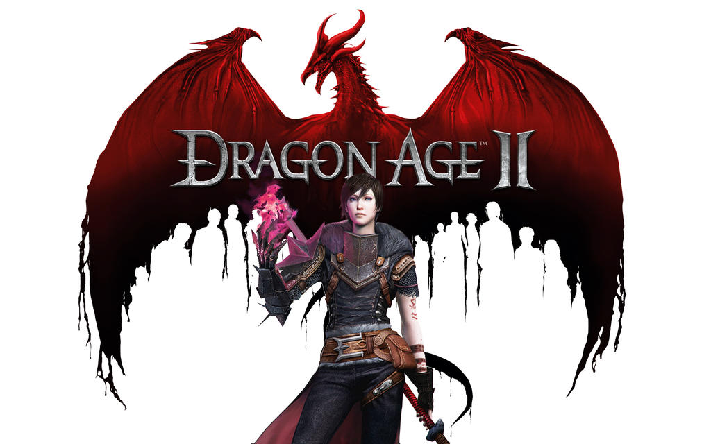

전투의 시작.
테다스를 5번째 마름병에서 구한 영웅을 역사는 어떻게 기억할까요? 다크스폰에 맞서 싸우고 노블 드워프, 엘프, 메이지 견습생으로서의 유산을 결정하세요. 영웅을 커스터마이즈하고, 퀘스트의 수많은 독특한 이야기를 경험하여 왕국을 통합하고 고대의 악을 물리치세요. 출신을 선택하세요. 영웅의 외모에서 성격에 이르기까지 마음껏 결정할 수 있지만, 신중하게 선택하세요. 여러분의 선택으로 테다스에서 여행을 시작하는 장소가 결정됩니다. 수많은 다양한 개성으로 당신만의 방법으로 싸우세요.
커크월의 챔피언이 되세요.
당신은 커크월의 챔피언이 되고자 하는 난민 Hawke입니다. 문명의 진로를 결정하는 의사결정을 하며 힘을 키우고 장대한 전투를 하십시오. 대담하게 움직이세요. 당신의 행동은 여느 때보다도 중요하고, 목표에 도달하기까지 10년이 있기 때문에 장기적으로 생각해야 합니다. 힘을 추구하기 위한 모험은 이제 시작되었지만, 역사는 당신을 어떻게 기억할까요?

여러분의 모험이 시작됩니다.
하늘이 열리고 혼란의 비가 내리면, 세계에는 영웅이 필요합니다. 드래곤 에이지: 인퀴지션에서 테다스의 구세주가 되세요. 여러분은 인퀴지터입니다. 파멸을 부르는 세상을 구원해야 합니다. 하지만 앞길은 어려운 결정들로 가득합니다. 테다스는 갈등의 땅입니다. 더 거대해진 악마의 침공이 시작되어도 각 세력은 끊임없이 서로 전쟁을 벌입니다. 여러분과 영웅의 무리만이 단결을 가져올 수 있습니다.